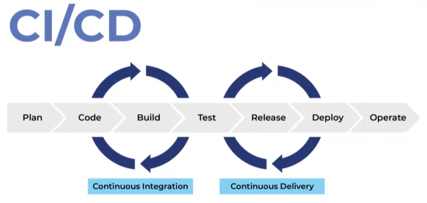
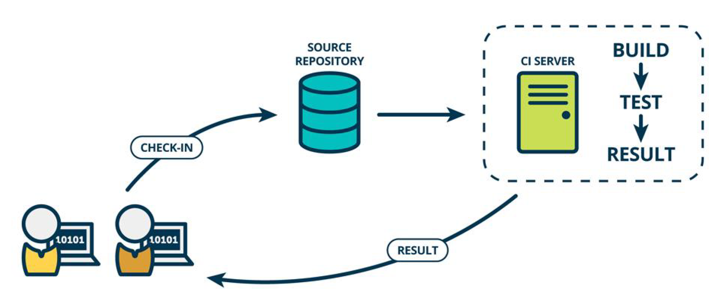
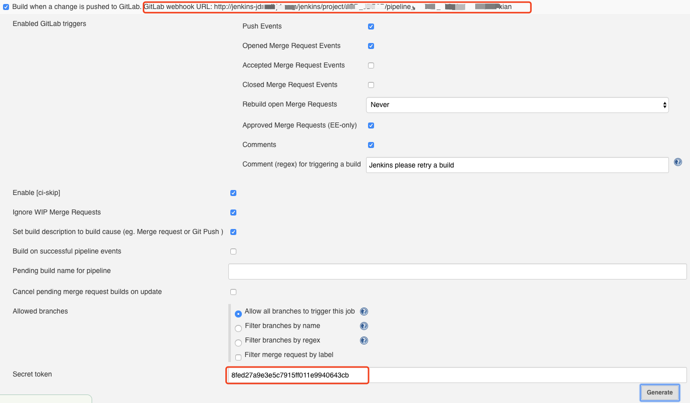
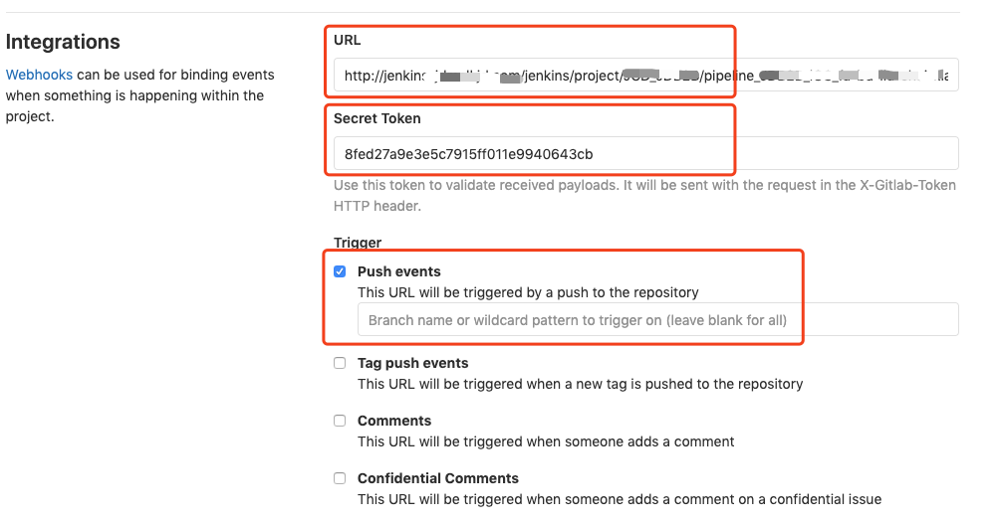
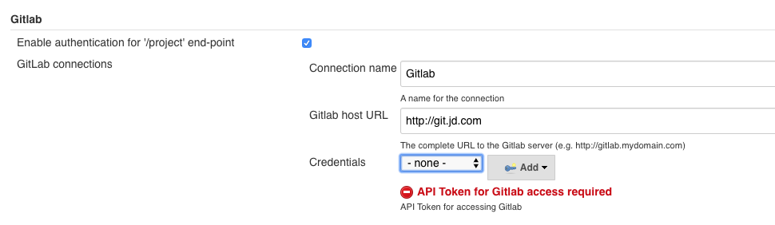
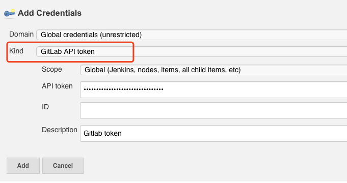
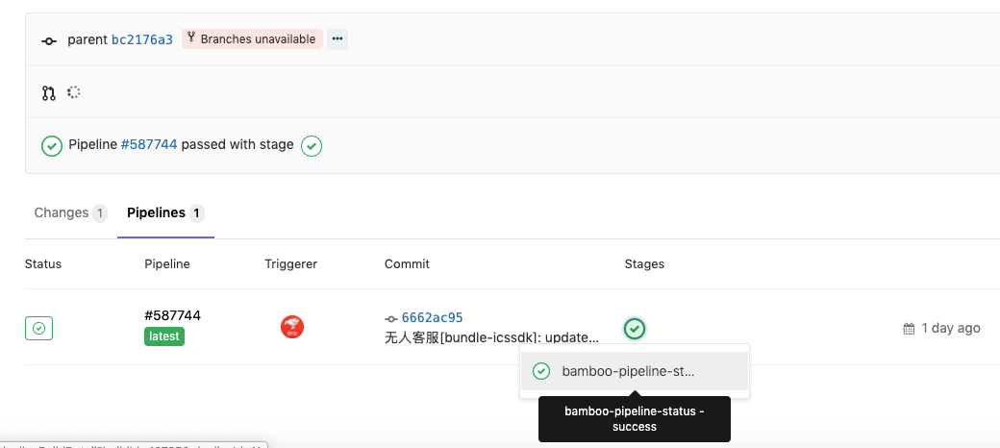

CICD
CI/CD 技术通过自动化的手段，来快速执行代码检查、测试、构建、部署等任务，从而提高研发效率，确保我们的应用可以快速迭代升级。
-
持续集成：
- CI(Continuous integration)，持续集成是指企业中的多名开发者在开发同一个项目的不同功能代码的过程当中，可以频繁的将代码提交到统一的代码仓库并合并到一起、且相互不影响工作的工作模式。
-
持续部署：
- CD(continuous deployment)，持续部署是指基于某种工具或平台等方式能实现代码自动化的构建、 打包、测试和部署到测试或生产等环境以实现代码 的快速迭代更新,持续部署在某种程度上代表了一个开发团队的更新迭代速率(工作效率)。
-
持续交付:
- CD(Continuous Delivery)，持续交付是能够以可持续的方式、安全、快速地将所有类型的变更(如添加新功能、配置更改、bug修复)等投入生产或交到用户手中、即可以被用户使用(比如电商平台可以被用户购买商品)，从而对公司产生商业价值，因此持续交付是产品价值的一种交付，是产品价值的一种盈 利的实现

持续集成（CI）
CI 是 Continuous Integration 的缩写，也就是我们熟悉的持续集成，顾名思义，这里面有两个关键的问题：集成什么东西？为什么要持续？要回答这两个问题，就得从 CI 诞生的历史说起了。
在 20 世纪 90 年代，软件开发还是瀑布模式的天下，人们发现，在很长一段时间里，软件是根本无法运行的。因为按照项目计划，软件的功能被拆分成各个模块，由不同的团队分别开发，只有到了开发完成之后的集成阶段，软件才会被真正地组装到一起。可是，往往几个月开发下来，到了集成的时候，大量分支合并带来的冲突和功能问题集中爆发，团队疲于奔命，各种救火，甚至有时候发现压根集成不起来。
所以，软件集成是一件高风险的、不确定的事情，国外甚至有个专门的说法，叫作“集成地狱”。也正因为如此，人们就更倾向于不做集成，这就导致开发末端的集成环节变得更加困难，从而形成了一个恶性循环。
为了解决这个问题，CI 的思想应运而生。CI 本身源于肯特·贝克（Kent Beck）在 1996 年提出的极限编程方法（ExtremeProgramming，简称 XP）。顾名思义，极限编程是一种软件开发方法，作为敏捷开发的方法之一，目的在于通过缩短开发周期，提高发布频率来提升软件质量，改善用户需求响应速度。
关于 CI 的定义，我在这里引用一下马丁·福勒（Martin Fowler）的一篇博客中的内容，这也是当前最为业界公认的定义之一：
CI 是一种软件开发实践，团队成员频繁地将他们的工作成果集成到一起（通常每人每天至少提交一次，这样每天就会有多次集成），并且在每次提交后，自动触发运行一次包含自动化验证集的构建任务，以便尽早地发现集成问题。
CI 采用了一种反常规的思路来解决软件集成的困境，其核心理念就是：越是痛苦的事情，就要越频繁地做。很多人不理解为什么，举个例子你就明白了。我小时候身体非常不好，经常要喝中药，第一次喝的时候，每喝一口都想吐，可是连续喝了一个星期之后，我发现中药跟水的味道也没什么区别。这其实是因为人的适应力很强，慢慢就习惯了中药的味道。对于软件开发来说，也是这个道理。
如果开发周期末端的一次性集成有这么大的风险和不确定性，那不如把集成的频率提高，让每次集成的内容减少，这样即便失败，影响的也仅仅是一次小的集成内容，问题定位和修复都可以更加快速地完成。这样一来，不仅提高了软件的质量，也大大降低了最后阶段的返工所带来的浪费，还提升了软件交付效率。
假如你认为自己所在的项目和团队在践行 CI，那么你可以思考 3 个问题，看看你们是否做到了。
- 每一次代码提交，是否都会触发一次完整的流水线？
- 每次流水线是否会触发自动化的测试环节？
- 如果流水线出现了问题，是否能够在 10 分钟之内修复？
第一阶段：每次提交触发完整的流水线
第一个阶段的关键词是：快速集成。这是对 CI 核心理念的最好诠释，也就是集成速度做到极致，每次变更都会触发 CI。
当然，这里的变更有可能是代码变更，也有可能是配置、环境、数据变更。我之前强调过，要将一切都纳入版本控制，这样，所有的元数据变更都会被版本管理系统捕获，并通过事件或者 Webhook 的方式通知持续集成平台。
对于现代的持续集成平台，比如大家常用的 Jenkins，默认支持多种触发方式，比如定时触发、轮询触发或者 Webhook 触发。那么，如果想做到每次提交都触发持续集成的话，首先就需要打通版本控制系统和持续集成系统，比如 GitLab 和 Jenkins 的集成，网上已经有很多现成的材料，大家照着操作一般都不会有太多问题。但是，只要打通两个系统就足够了吗？显然没有这么简单。实施提交触发流水线，还需要一些前置条件。
- 统一的分支策略。
既然 CI 的目的是集成，那么首先就需要有一条以集成为目的的分支。这条分支可以是研发主线，也可以是专门的集成分支，一旦这条分支上发生任何变更，就会触发相应的 CI 过程。那么，可能有人会问，很多时候开发都是在特性分支或者版本分支上进行的，难道这些分支上的提交就不要经过 CI 环节了吗？这就引出了第 2 个前置条件。
- 清晰的集成规则。
对于一个大中型团队来说，每天的提交量是非常惊人的，这就要求持续集成具备足够的吞吐率，能够及时处理这些请求。而对于不同分支来说，持续集成的步骤和要求也不尽相同。不同分支的集成目的不同，相应的环节自然也不相同。
比如，对于研发特性分支而言，目的主要是快速验证和反馈，那么速度就是不可忽视的因素，所以这个层面的持续集成，主要以验证打包和代码质量为主；而对于系统集成分支而言，它的目的不仅是验证打包和代码质量，还要关注接口和业务层面的正确性，所以集成的步骤会更加复杂，成本也会随之上升。所以，**根据分支策略选择合适的集成规则，对于 CI 的有效运转来说非常重要**。
- 标准化的资源池。
资源池作为 CI 的基础设施，重要性不言而喻。
首先，资源池需要实现环境标准化，也就是任何任务在任何节点都具备可运行的能力，这个能力就包括了工具、配置等一系列要素。如果 CI 任务在一个节点可以运行，跑到另外一个节点就运行失败，那么 CI 的公信力就会受到影响。
另外，资源池的并发吞吐量应该可以满足集中提交的场景，可以动态按需初始化的资源池就成了最佳选择。当然，同时还要兼顾成本因素，因为大量资源的投入如果没有被有效利用，那么造成的浪费是巨大的。
- 足够快的反馈周期。
越是初级 CI，对速度的敏感性就越强。一般来讲，如果 CI 环节超过 10～15 分钟还没有反馈结果，那么研发人员就会失去耐心，所以 CI 的运行速度是一个需要纳入监控的重要指标。对于不同的系统而言，要约定能够容忍的 CI 最大时长，如果超过这个时长，同样会导致 CI 失败。所以，这就需要环境、平台、开发团队共同维护。
你看，一套基本可用的 CI 所依赖的条件远不止这些，核心还是为了能够在最短的时间内完成集成动作并给出反馈。如果你们公司已经实现了代码提交的 CI，并且不会有大量失败和排队的情况发生，那么，恭喜你，第一阶段就算通过了。
第二阶段：每次流水线触发自动化测试
第二个阶段的关键词是：**质量内建**。实际上，CI 的目的是尽早发现问题，这些问题既包括构建失败，也包括质量不达标，比如测试不通过，或者代码规约静态扫描等不符合标准。
我见过的很多 CI 都是“瘸腿”CI，因为缺失了自动化测试的能力注入，或者自动化测试的能力很差，基本无法发现有效问题。这里面有几个重要的关注点，我们来看一下。
1.**匹配合适的测试活动**。
对于不同层级的 CI 而言，同样需要根据集成规则来确定需要注入的质量活动。比如，最初级的提交集成就不适合那些运行过于复杂、时间太长的测试活动，快速的代码检查和冒烟测试就足以证明这个版本已经达到了最基本的要求。而对于系统层的集成来说，质量要求会更高，这样一来，一些接口测试、UI 测试等就可以纳入到 CI 里面来。
2.**树立测试结果的公信度**。
自动化测试的目标是帮助研发提前发现问题，但是，如果因为自动化测试能力自身的缺陷或者环境不稳定等因素，造成了 CI 的大量失败，那么，这个 CI 对于研发来说就可有可无了。所以，**我们要对 CI 失败进行分类分级，重点关注那些异常和误报的情况，并进行相应的持续优化和改善**。
3.**提升测试活动的有效性**。
考虑到 CI 对于速度的敏感性，那么如何在最短的时间内运行最有效的测试任务，就成了一个关键问题。显然，大而全的测试套件是不合时宜的，只有在基础功能验证的基础上，结合与本次 CI 的变更点相关的测试任务，发现问题的概率才会大大提升。所以，根据 CI 变更，自动识别匹配对应的测试任务也是一个挑战。
当你的 CI 已经集成了自动化验证集，并且该验证集可以有效地发现问题，那么恭喜你，第二阶段也成功了。但这并不是“一锤子买卖”，毕竟，由于业务需求的不断变化，自动化测试要持续更新，才能保证始终有效。
第三阶段：出了问题可以在第一时间修复
到现在为止，我们已经做到了快速集成和质量内建，说实话，利用现有的开源工具和框架快速搭建一套 CI 平台并不困难，**真正让 CI 发挥价值的关键，还是在于团队面对持续集成的态度，以及团队内是否建立了持续集成的文化**。
硅谷的很多公司都有一种不成文的规定，那就是员工每天下班前要先确认持续集成是正常的，然后再离开公司，同时，公司也不建议在深夜或者周末上线代码，因为一旦出了问题，很难在第一时间修复，造成的影响难以估计。
其实，很多企业并不知道他们花费大量人力、物力建设 CI 的平均修复时长是多少，也缺乏这方面的数据统计。就现状而言，有些时候，他们可以做到在 10 分钟内修复，而有些时候就需要几个小时，原因可能是负责人出去开会了，或者是赶上了午休的时间。
当然，也有一些企业质疑 10 分钟这个时间长度，因为软件项目的特殊性，很有可能每次集成周期就远大于 10 分钟。如果你也是这样想的，那你可能就误解 CI 的理念和初衷了，毕竟我也不相信马丁·福勒能够保证在 10 分钟内修复问题。在这么短的时间里，人为因素其实并不可控，所以，**人不是关键，建立机制才是关键**。
什么是机制呢？**机制就是一种约定，人们愿意遵守这样的行为，并且做了会得到好处**。对于 CI 而言，保证集成主线的可用性，其实就是团队成员间的一种约定。这不在于谁出的问题谁去修复，而在于我们是否能够保证 CI 的稳定性，足够清楚问题的降级路径，并且主动关注、分析和推动问题解决。
另外，团队要建立清晰的规则，比如 10 分钟内没有修复则自动回滚代码，比如当 CI“亮红灯”的时候，团队不再提交新的代码，因为在错误的基础上没有办法验证新的提交，这时需要集体放下手中的工作，共同恢复 CI 的状态。
只有团队成员深信 CI 带给团队的长期好处远大于短期投入，并且愿意身体力行地践行 CI，这个“10 分钟”规则才有可能得到保障，并落在实处。
- 每次提交都会自动触发构建
- 包括：编译、单元测试、代码安全扫描、质量扫描、构建制品等
- 代表工具：Jenkins、GitHub Action、GitLab CI、腾讯云 CODING、阿里云效

代码提交触发持续集成
首先，你需要在 Jenkins 中安装GitLab 插件。这个插件提供了很多GitLab 环境变量，用于获取 GitLab 的信息，比如，gitlabSourceBranch 这个参数就非常有用，它可以提取本次触发的 Webhook 的分支信息。毕竟，这个信息只有 GitLab 知道。只有同步给 Jenkins，才能拉取正确的分支代码执行持续集成过程。
当 GitLab 监听到代码变更的事件后，会自动调用这个插件提供的 Webhook 地址，并实现解析 Webhook 数据和触发 Jenkins 任务的功能。
其实，我们在自研流水线平台的时候，也可以参考这个思路：**通过后台调用 GitLab 的 API 完成 Webhook 的自动注册，从而实现对代码变更事件的监听和任务的自动化执行**。
当 GitLab 插件安装完成后，你可以在 Jenkins 任务的 Build Triggers 中发现一个新的选项，勾选这个选项，就可以激活 GitLab 自动触发配置。其中比较重要的两个信息，我在下面的图片中用红色方块圈出来了。

- 上面的链接就是 Webhook 地址，每个 Jenkins 任务都不相同；
- 下面的是这个 Webhook 对应的认证 Token。
你需要把这两个信息一起添加到 GitLab 的集成配置中。打开 GitLab 仓库的“设置 - 集成”选项，可以看到 GitLab 的 Webhook 配置页面，将 Jenkins 插件生成的地址和 Token 信息复制到配置选项中，并勾选对应的触发选项。
GitLab 默认提供了多种触发选项，在下面的截图中，只勾选了 Push 事件，也就是只有监听到 Git Push 动作的时候, 才会触发 Webhook。当然，你可以配置监听的分支信息，只针对特性分支执行关联的 Jenkins 任务。在 GitLab 中配置完成后，可以看到新添加的 Webhook 信息，点击“测试”验证是否可以正常执行，如果一切正常，则会提示“200-OK”。

持续集成更新代码状态
打开 Jenkins 的系统管理页面，找到 GitLab 配置，添加 GitLab 服务器的地址和认证方式。注意，这里的 Credentials 要选择 GitLab API Token 类型，对应的 Token 可以在 GitLab 的“用户 - 设置 - Access Tokens”中生成。由于 Token 的特殊性，只有在生成的时候可见，以后就再也看不到了。所以，在生成 Token 以后，你需要妥善地保存这个信息。


那么，配置完成后，要如何更新 GitLab 的提交状态呢？这就需要用到插件提供的更新构建结果命令了。
对于自由风格类型的 Jenkins 任务，你可以添加构建后处理步骤 - Publish build status to GitLab，它会自动将排队的任务更新为“Pending”，运行的任务更新为“Running”，完成的任务根据结果更新为“Success”或者是“Failed”。
对于使用流水线的任务来说，官方也提供了相应的示例代码，你只需要对照着写在 Jenkinsfile 里面就可以了。
updateGitlabCommitStatus name: 'build', state: 'success'
这样一来，每次提交代码触发的流水线结果也会显示在 GitLab 的提交状态中，可以在查看合并请求时作为参考。有的公司更加直接：如果流水线的状态不是成功状态，那么就会自动关闭提交的合并请求。其实无论采用哪种方式，初衷都是希望开发者在第一时间修复持续集成的问题。

我们再阶段性地总结一下已经实现的功能：
- 每次 GitLab 上的代码提交都可以通过 Webhook 触发对应的 Jenkins 任务。具体触发哪个任务，取决于你将哪个 Jenkins 任务的地址添加到了 GitLab 的 Webhook 配置中；
- 每次 Jenkins 任务执行完毕后，会将执行结果写到 GitLab 的提交记录中。你可以查看执行状态，决定是否接受合并请求。
持续部署（CD）
- 自动部署到生产环境
- 误区：在持续集成（CI）中完成持续部署的工作，例如在 Jenkins 里通过 kubectl apply 完成部署操作。（回滚会比较复杂）
- 常见工具：FluxCD、Argo CD、Harness、Spinnaker
- 复杂的发布策略：分批次发布、A/B Test、灰度、金丝雀发布等
持续交付
- 自动部署到测试环境
- 运行自动化测试：Selenium 自动化测试、GUI 测试、白盒测试、黑盒测试
- 由于工作流是连续发生的，所以当持续交付过程出错时，可以立刻找到对应的 git 提交